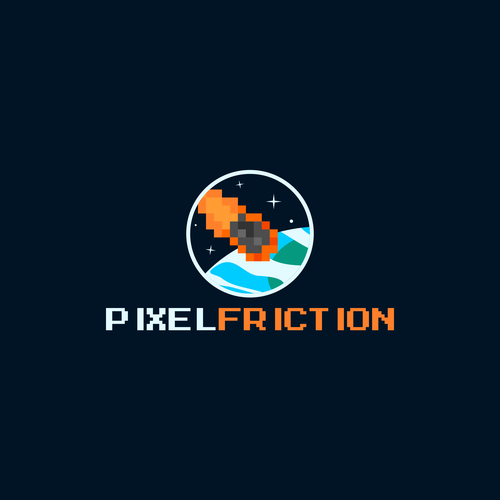

Introduccion
17/11/21
Contexto
Un videojuego es una aplicación interactiva orientada al entretenimiento que hoy en dia a nosotros los jovenes nos gustan mucho. Estos funcion a traves de una consola y cadas consola tiene su control para que puedas jugar. Los juegos se ponen en la consola y hay muchos diferentes.
Desarrollo
Los orígenes del videojuego se remontan a la década de 1950, cuando poco después de la aparición de las primeras computadoras electrónicas tras el fin de la Segunda Guerra Mundial, se llevaron a cabo los primeros intentos por implementar programas de carácter lúdico. Así, fueron creados el Nim (1951) o el Oxo (1952), juegos electrónicos que aún no pueden ser denominados videojuegos, y el Tennis for Two (1958) o el Spacewar! (1962), auténticos pioneros del género. Todos ellos eran todavía prototipos, juegos muy simples y de carácter experimental que no llegaron a comercializarse, entre otras cosas, porque funcionaban en unas máquinas que solo estaban disponibles en universidades o en institutos de investigación
Motivacion
Elegi este tema porque creo que hoy en dia todo adolescente o incluso niño juega videojuegos y tiene una consola. Creo que es algo que a muchos les encanta y pues a mi tambien
.jfif)